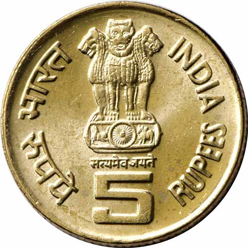
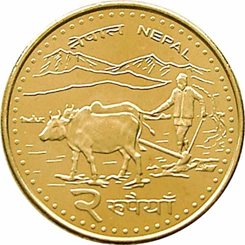
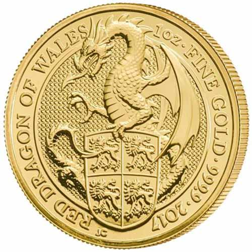
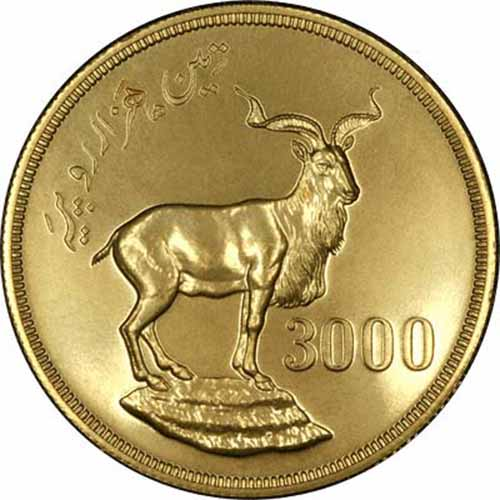
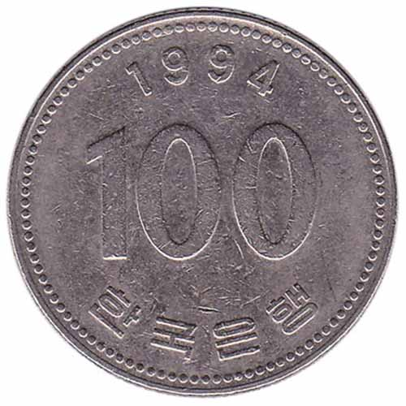
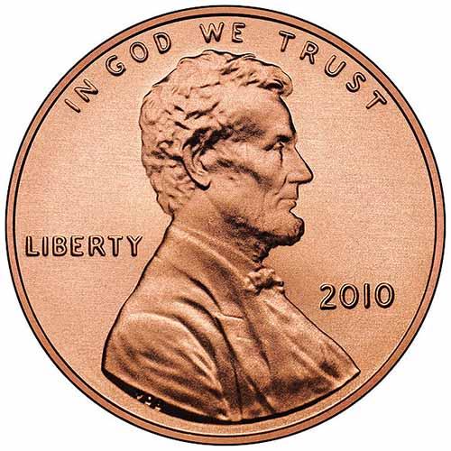

India

The One rupee coin is an Indian coin worth one Indian rupee and is made up of a hundred paisas. ... Circular in shape, the one rupee coins weighs 3.76 grams (58.0 grains), encompasses a distance across of 21.93-millimetre (0.863 in) and thickness of 1.45-millimetre (0.057 in).
Nepal

The rupee was presented in 1932, supplanting the silver mohar at a rate of 2 mohar = 1 rupee. At to begin with, the rupee was called the Mohru in Nepali. Its esteem was pegged to the Indian Rupee in 1994 at a rate of 1.6 Nepalese rupees = 1 Indian rupee
New Zealand

Unused Zealand coin cash nowadays comprises of five decimal coins that speak to diverse angles of our culture and legacy. A Maori carved head or koruru beneath the figure “10” with Maori beam designs. Representation of a well-known Maori “pukaki” carving.
Pakistan

The primary coins of Pakistan were issued in 1948, the year after freedom had been accomplished. The cash framework was based on the conventional Rupees, Annas and Pice of the sub-continent and the modern coins portrayed a Toughra, Bow and Star, all typical of a Moslem state.
South Korea

The won was reintroduced on June 10, 1962, at a rate of 1 won = 10 hwan. It got to be the sole lawful delicate on Walk 22, 1975, with the withdrawal of the final circulating hwan coins. Its ISO 4217 code is KRW. At the reintroduction of the won in 1962, its esteem was pegged at 125 won = US$1. The taking after pegs worked between 1962 and 1980:
USA

Quarter (united states coin) 1796, 1804–1807, 1815–1828, 1831–1932, 1934-present. The quarter, brief for quarter dollar, may be a Joined together States coin worth 25 cents, one-quarter of a dollar. It includes a breadth of .955 inch (24.26 mm) and a thickness of .069 inch (1.75 mm).